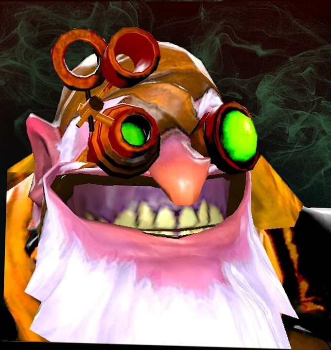

CHEATERok
Самая большая заноза в киберпространстве
Основные характеристики

Сила
Ловкость
Интелект
15+1.3
13+1.8
24+2.2

На данный момент CHEATERok обладает 18 уровнем прокачки.
Описание Существа
CHEATERok - это существо, обладающее поразительной склонностью к саморазрушению в компьютерной среде...
Так же как и большинству плохих танцеров ему мешают 2 вещи:
- Отсутвие опыта
- Отсутствие зрело оценить ситуацию
Но эти 2 качества он компенсирует повышенным жопоподгоранием способным рассплавить куб титана за 2.022 наносекунды.
В реальной жизни является позитивным но крайне достовучим субьектом, физической опасности не представляет, однако ментальный урон может быть необратим.
Местонахождение
В период 2005 - 2010 года находился на серверах Battle.net культовой игры Warcraft 3 Frozen Throne
С 2010 - 2013 основное обитание находилось на серверах Garena
C 2013 - наши дни основное обитание нашел на серверах компании VALVEв игре DOTA 2
Основные прозвища от тиммейтов
Анкета для самопроверки
| Yes NO | |
| Yes NO | |
| Yes NO | |
| Yes NO | |
| Yes NO |